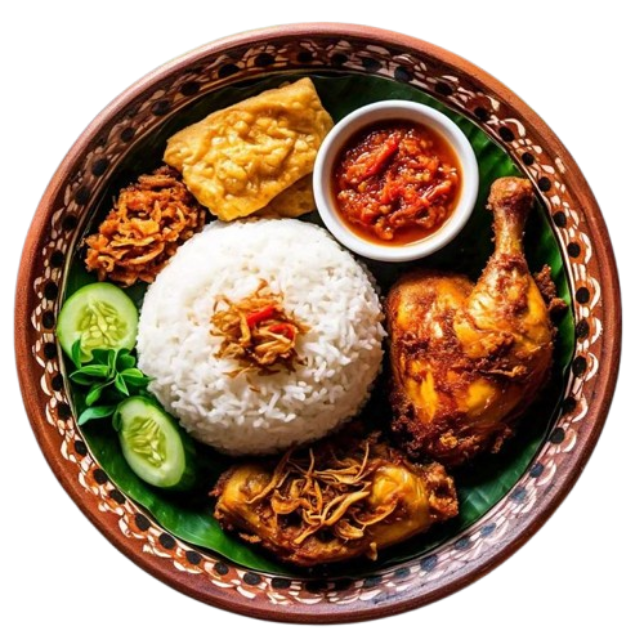

Jelajahi Berdasarkan Kategori

Makanan Utama

Camilan

Minuman

Kue Tradisional
Resep Makanan Khas Indonesia
Kumpulan resep makanan khas Indonesia yang otentik, mudah dibuat dan lezat untuk semua.

Makanan Utama
Camilan
Minuman
Kue Tradisional

⏱ 30 Menit ⭐ 4.8

⏱ 120 Menit ⭐ 4.9

⏱ 45 Menit ⭐ 4.7

⏱ 90 Menit ⭐ 4.6
Semua resep sudah dicoba dan dijamin enak.
Bahan lokal yang mudah ditemukan.
Cocok untuk pemula hingga ahli masak.
Simpan resep favorit kapan saja.